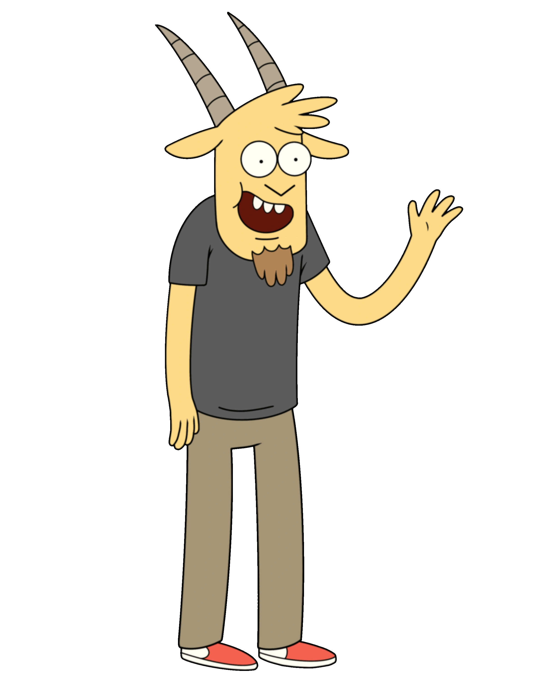

Personaggi Principali
Thomas
Thomas è una giovane capra che lavora al parco e viene spesso preso di mira da Muscle Man. Alla fine si scopre che è una spia russa di nome Nikolai, venuta in America per rubare i segreti del parco.
Thomas
Thomas è una giovane capra che lavora al parco e viene spesso preso di mira da Muscle Man. Alla fine si scopre che è una spia russa di nome Nikolai, venuta in America per rubare i segreti del parco.